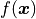
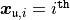
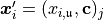
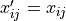
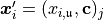
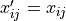
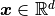
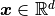

QMCPy Documentation¶
Integration Method¶
Main driver function for QMCPy.
-
qmcpy.integrate.integrate(integrand, true_measure, discrete_distrib=None, stopping_criterion=None)¶ Specify and compute integral of  for .
- Parameters
integrand (Integrand) – an object from class Integrand. If None (default), sum of two variables defined on unit square is used.
true_measure (TrueMeasure) – an object from class TrueMeasure. If None (default), standard uniform distribution is used.
discrete_distrib (DiscreteDistribution) – an object from class DiscreteDistribution. If None (default), IID standard uniform distribution is used.
stopping_criterion (StoppingCriterion) – an object from class StoppingCriterion. If None (default), criterion based on central limit theorem with absolute tolerance equal to 0.01 is used.
- Returns
tuple containing:
solution (
float): estimated value of the integraldata (
AccumData): input data and information such as number of sampling points and run time used to obtain solution- Return type
Integrand Class¶
Asian Call Option Payoff¶
Definition for class AsianCall, a concrete implementation of Integrand
-
class
qmcpy.integrand.asian_call.AsianCall(bm_measure, volatility=0.5, start_price=30, strike_price=25, interest_rate=0, mean_type='arithmetic')¶ Specify and generate payoff values of an Asian Call option
-
__init__(bm_measure, volatility=0.5, start_price=30, strike_price=25, interest_rate=0, mean_type='arithmetic')¶ Initialize AsianCall Integrand’s’
- Parameters
bm_measure (TrueMeasure) – A BrownianMotion Measure object
volatility (float) – sigma, the volatility of the asset
start_price (float) – S(0), the asset value at t=0
strike_price (float) – strike_price, the call/put offer
interest_rate (float) – r, the annual interest rate
mean_type (string) – ‘arithmetic’ or ‘geometric’ mean
-
g(x)¶ Original integrand to be integrated
- Parameters
x – nodes,  row of an
 matrix
matrix- Returns
 matrix with values where if , then  for
matrix with values where if , then  for  , and
, and  otherwise
otherwise
-
get_discounted_payoffs(stock_path, dimension)¶ Calculate the discounted payoff from the stock path
stock_path (ndarray): option prices at monitoring times dimension (int): number of dimensions
-
Keister Function¶
Definition for class Keister, a concrete implementation of Integrand
-
class
qmcpy.integrand.keister.Keister(dimension)¶ Specify and generate values
 for .
for .The standard example integrates the Keister integrand with respect to an IID Gaussian distribution with variance 1/2.
- Reference:
Keister, Multidimensional Quadrature Algorithms, Computers in Physics, 10, pp. 119-122, 1996.
-
__init__(dimension)¶ - Parameters
dimension (ndarray) – dimension(s) of the integrand(s)
-
g(x)¶ Original integrand to be integrated
- Parameters
x – nodes, row of an
matrix- Returns
- matrix with values where if , then for , and otherwise
A Linear Function¶
Definition for class Linear, a concrete implementation of Integrand
-
class
qmcpy.integrand.linear.Linear(dimension)¶ Specify and generate values for

-
__init__(dimension)¶ - Parameters
dimension (ndarray) – dimension(s) of the integrand(s)
-
g(x)¶ Original integrand to be integrated
- Parameters
x – nodes, row of an
matrix- Returns
- matrix with values where if , then for , and otherwise
-
Quick Construct for Function¶
Definition for class QuickConstruct, a concrete implementation of Integrand
-
class
qmcpy.integrand.quick_construct.QuickConstruct(dimension, custom_fun)¶ Specify and generate values of a user-defined function
-
__init__(dimension, custom_fun)¶ Initialize custom Integrand
- Parameters
dimension (ndarray) – dimension(s) of the integrand(s)
custom_fun (int) – a callable univariable or multivariate Python function that returns a real number.
Note
Input of the function:
x: nodes, row of an
matrix
-
g(x)¶ ABSTRACT METHOD Original integrand to be integrated
- Parameters
x – nodes, row of an
matrix- Returns
- matrix with values where if , then for , and otherwise
-
Measure Class¶
API
Definition of Uniform, a concrete implementation of TrueMeasure
-
class
qmcpy.true_measure.uniform.Uniform(dimension, lower_bound=0.0, upper_bound=1.0)¶ Uniform Measure
Definition of Gaussian, a concrete implementation of TrueMeasure
-
class
qmcpy.true_measure.gaussian.Gaussian(dimension, mean=0, variance=1)¶ Gaussian (Normal) Measure
Definition of BrownianMotion, a concrete implementation of TrueMeasure
-
class
qmcpy.true_measure.brownian_motion.BrownianMotion(dimension, time_vector=[array([ 0.250, 0.500, 0.750, 1.000])])¶ Brownian Motion Measure
-
__init__(dimension, time_vector=[array([ 0.250, 0.500, 0.750, 1.000])])¶ - Parameters
dimension (ndarray) – dimension’s’ of the integrand’s’
time_vector (list of ndarrays) – monitoring times for the Integrand’s’
-
Definition of Lebesgue, a concrete implementation of TrueMeasure
Discrete Distribution Class¶
Definition for IIDStdUniform, a concrete implementation of DiscreteDistribution
-
class
qmcpy.discrete_distribution.iid_std_uniform.IIDStdUniform(rng_seed=None)¶ IID Standard Uniform
-
__init__(rng_seed=None)¶ - Parameters
rng_seed (int) – seed the random number generator for reproducibility
-
gen_dd_samples(replications, n_samples, dimensions)¶ Generate r nxd IID Standard Uniform samples
-
Definition for IIDStdGaussian, a concrete implementation of DiscreteDistribution
-
class
qmcpy.discrete_distribution.iid_std_gaussian.IIDStdGaussian(rng_seed=None)¶ Standard Gaussian
-
__init__(rng_seed=None)¶ - Parameters
rng_seed (int) – seed the random number generator for reproducibility
-
gen_dd_samples(replications, n_samples, dimensions)¶ Generate r nxd IID Standard Gaussian samples
-
Definition for Lattice, a concrete implementation of DiscreteDistribution
-
class
qmcpy.discrete_distribution.lattice.Lattice(rng_seed=None)¶ Quasi-Random Lattice low discrepancy sequence (Base 2)
-
__init__(rng_seed=None)¶ - Parameters
rng_seed (int) – seed the random number generator for reproducibility
-
gen_dd_samples(replications, n_samples, dimensions, scramble=True)¶ Generate r nxd Lattice samples
- Parameters
- Returns
replications x n_samples x dimensions (numpy array)
-
Definition for Sobol, a concrete implementation of DiscreteDistribution
-
class
qmcpy.discrete_distribution.sobol.Sobol(rng_seed=None, backend='mps')¶ Quasi-Random Sobol low discrepancy sequence (Base 2)
-
__init__(rng_seed=None, backend='mps')¶ - Parameters
rng_seed (int) – seed the random number generator for reproducibility
-
gen_dd_samples(replications, n_samples, dimensions, scramble=True)¶ Generate r nxd Sobol samples
- Parameters
- Returns
replications x n_samples x dimensions (numpy array)
-
-
qmcpy.discrete_distribution.sobol.randint(low, high=None, size=None, dtype='l')¶ Return random integers from low (inclusive) to high (exclusive).
Return random integers from the “discrete uniform” distribution of the specified dtype in the “half-open” interval [low, high). If high is None (the default), then results are from [0, low).
- lowint or array-like of ints
Lowest (signed) integers to be drawn from the distribution (unless
high=None, in which case this parameter is one above the highest such integer).- highint or array-like of ints, optional
If provided, one above the largest (signed) integer to be drawn from the distribution (see above for behavior if
high=None). If array-like, must contain integer values- sizeint or tuple of ints, optional
Output shape. If the given shape is, e.g.,
(m, n, k), thenm * n * ksamples are drawn. Default is None, in which case a single value is returned.- dtypedtype, optional
Desired dtype of the result. All dtypes are determined by their name, i.e., ‘int64’, ‘int’, etc, so byteorder is not available and a specific precision may have different C types depending on the platform. The default value is ‘np.int’.
New in version 1.11.0.
- outint or ndarray of ints
size-shaped array of random integers from the appropriate distribution, or a single such random int if size not provided.
- random.random_integerssimilar to randint, only for the closed
interval [low, high], and 1 is the lowest value if high is omitted.
>>> np.random.randint(2, size=10) array([1, 0, 0, 0, 1, 1, 0, 0, 1, 0]) # random >>> np.random.randint(1, size=10) array([0, 0, 0, 0, 0, 0, 0, 0, 0, 0])
Generate a 2 x 4 array of ints between 0 and 4, inclusive:
>>> np.random.randint(5, size=(2, 4)) array([[4, 0, 2, 1], # random [3, 2, 2, 0]])
Generate a 1 x 3 array with 3 different upper bounds
>>> np.random.randint(1, [3, 5, 10]) array([2, 2, 9]) # random
Generate a 1 by 3 array with 3 different lower bounds
>>> np.random.randint([1, 5, 7], 10) array([9, 8, 7]) # random
Generate a 2 by 4 array using broadcasting with dtype of uint8
>>> np.random.randint([1, 3, 5, 7], [[10], [20]], dtype=np.uint8) array([[ 8, 6, 9, 7], # random [ 1, 16, 9, 12]], dtype=uint8)
Data Class¶
APIs of accum_data
Definition of MeanVarData, a concrete implementation of AccumData
-
class
qmcpy.accum_data.mean_var_data.MeanVarData(levels, n_init)¶ Accumulated data for IIDDistribution calculations, and store the sample mean and variance of integrand values
-
__init__(levels, n_init)¶ Initialize data instance
-
update_data(integrand, true_measure)¶ Update data
- Parameters
integrand (Integrand) – an instance of Integrand
true_measure (TrueMeasure) – an instance of TrueMeasure
- Returns
None
-
Definition for MeanVarDataRep, a concrete implementation of AccumData
-
class
qmcpy.accum_data.mean_var_data_rep.MeanVarDataRep(levels, n_init, replications)¶ Accumulated data Repeated Central Limit Stopping Criterion (CLTRep) calculations.
-
__init__(levels, n_init, replications)¶ Initialize data instance
-
update_data(integrand, true_measure)¶ Update data
- Parameters
integrand (Integrand) – an instance of Integrand
true_measure (TrueMeasure) – an instance of TrueMeasure
- Returns
None
-
Stopping Criterion Class¶
Definition for CLT, a concrete implementation of StoppingCriterion
-
class
qmcpy.stopping_criterion.clt.CLT(discrete_distrib, true_measure, inflate=1.2, alpha=0.01, abs_tol=0.01, rel_tol=0, n_init=1024, n_max=10000000000.0)¶ Stopping criterion based on the Central Limit Theorem (CLT)
-
__init__(discrete_distrib, true_measure, inflate=1.2, alpha=0.01, abs_tol=0.01, rel_tol=0, n_init=1024, n_max=10000000000.0)¶ - Parameters
discrete_distrib –
true_measure – an instance of DiscreteDistribution
inflate – inflation factor when estimating variance
alpha – significance level for confidence interval
abs_tol – absolute error tolerance
rel_tol – relative error tolerance
n_max – maximum number of samples
-
stop_yet()¶ Determine when to stop
-
Definition for CLTRep, a concrete implementation of StoppingCriterion
-
class
qmcpy.stopping_criterion.clt_rep.CLTRep(discrete_distrib, true_measure, replications=16, inflate=1.2, alpha=0.01, abs_tol=0.01, rel_tol=0, n_init=32, n_max=1073741824)¶ Stopping criterion based on var(stream_1_estimate, …, stream_16_estimate) < errorTol
-
__init__(discrete_distrib, true_measure, replications=16, inflate=1.2, alpha=0.01, abs_tol=0.01, rel_tol=0, n_init=32, n_max=1073741824)¶ - Parameters
discrete_distrib –
true_measure (DiscreteDistribution) – an instance of DiscreteDistribution
replications (int) – number of random nxm matrices to generate
inflate (float) – inflation factor when estimating variance
alpha (float) – significance level for confidence interval
abs_tol (float) – absolute error tolerance
rel_tol (float) – relative error tolerance
n_max (int) – maximum number of samples
-
stop_yet()¶ Determine when to stop
-
Utilities¶
Meta-data and public utilities for qmcpy
Exceptions and Warnings thrown by qmcpy
-
exception
qmcpy.util.exceptions_warnings.DimensionError¶ Class for raising error about dimension
-
exception
qmcpy.util.exceptions_warnings.DistributionCompatibilityError¶ Class for raising error about incompatible distribution
-
exception
qmcpy.util.exceptions_warnings.DistributionGenerationError¶ Class for raising error about parameter inputs to gen_dd_samples (method of a DiscreteDistribution)
-
exception
qmcpy.util.exceptions_warnings.DistributionGenerationWarnings¶ Class for issuing warningssabout parameter inputs to gen_dd_samples (method of a DiscreteDistribution)
-
exception
qmcpy.util.exceptions_warnings.MaxSamplesWarning¶ Class for issuing warning about using maximum number of data samples
-
exception
qmcpy.util.exceptions_warnings.MethodImplementationError(subclass, method_name)¶ Class for raising error when an abstract method has not been implemented in the child class.
-
exception
qmcpy.util.exceptions_warnings.NotYetImplemented¶ Class for raising error when a component has been implemented yet
-
exception
qmcpy.util.exceptions_warnings.ParameterError¶ Class for raising error about input parameters
-
exception
qmcpy.util.exceptions_warnings.ParameterWarning¶ Class for issuing warnings about unacceptable parameters
-
exception
qmcpy.util.exceptions_warnings.TransformError¶ Class for raising error about transforming function to accommodate distribution